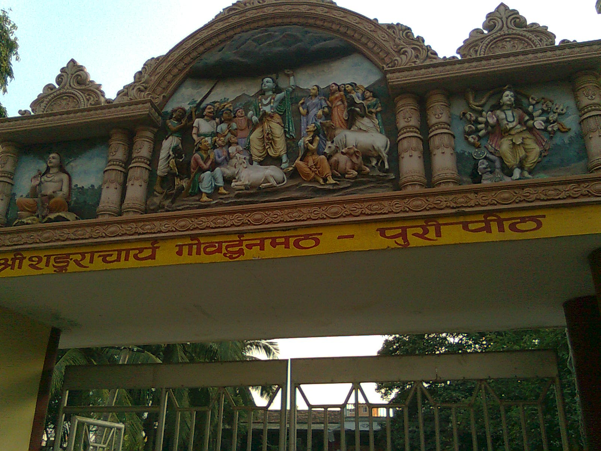

భారతదేశంలో సనాతన ధర్మ పరిరక్షణార్థం, వేద విజ్ఞానాన్ని శాశ్వతంగా నిలబెట్టడానికి జగద్గురు శ్రీ ఆదిశంకరాచార్యులు దేశం నాలుగు దిక్కులలో నాలుగు ఆమ్నాయ పీఠాలను ప్రతిష్ఠించారు. అందులో తూర్పు దిక్కుకు ప్రాతినిధ్యం వహిస్తూ వెలసిన అత్యున్నత ఆధ్యాత్మిక విద్యా పీఠమే శ్రీ పూర్వామ్నాయ గోవర్ధన పీఠం.
ఈ పవిత్ర పీఠం ఒడిశా రాష్ట్రంలోని సుప్రసిద్ధ పురుషోత్తమ క్షేత్రమైన పూరీ నగరంలో, స్వర్గద్వార సముద్రతీర సమీపంలోని శంకరాచార్య మార్గంలో కొలువై ఉంది.
ఋగ్వేద జ్ఞానానికి నిలయమైన ఈ పీఠం, జగన్నాథ సంస్కృతితో విడదీయరాని అనుబంధాన్ని కలిగి ఉండి, అద్వైత వేదాంత ప్రచారంలో మరియు భారతీయ ధార్మిక చైతన్యంలో గత 2,500 సంవత్సరాలకు పైగా అగ్రగామిగా సేవలందిస్తోంది.
శ్రీ గోవర్ధన పీఠం, పూరీ
జగద్గురు శ్రీ ఆదిశంకరాచార్య స్థాపిత పూర్వామ్నాయ పీఠం • పూరీ, ఒడిశా

౧. పరిచయం
౨. పీఠ శాస్త్రీయ స్వరూపం & వేద సంప్రదాయం
ఆదిశంకరాచార్యులు రచించిన 'మఠామ్నాయ సేతు' ప్రకారం గోవర్ధన పీఠం యొక్క శాస్త్రీయ విశేషాలు:
• ఆమ్నాయ దిశ: పూర్వామ్నాయం (తూర్పు దిక్కు).
• అధిష్ఠిత వేదం: ఋగ్వేదం (సకల వేదాలలో అత్యంత ప్రాచీనమైనది).
• మహావాక్యం: "ప్రజ్ఞానం బ్రహ్మ" (ఐతరేయోపనిషత్తు — చైతన్యమే, నిర్మల జ్ఞానమే పరబ్రహ్మ స్వరూపం).
• ప్రథమ పీఠాధిపతులు: జగద్గురు శంకరాచార్యుల ప్రథమ ప్రధాన శిష్యులైన శ్రీ పద్మపాదాచార్యులు. (సనందనుడనే పేరుగల ఈ శిష్యుడు గురుభక్తితో గంగా ప్రవాహంలో అడుగులు వేయగా, ఆయన పాదాలు మునిగిపోకుండా కాపాడటానికి గంగాదేవి ప్రతి అడుగు కింద కమలాలను వికసింపజేయడంతో 'పద్మపాదుడు' అని ఖ్యాతిగాంచారు).
• అధిష్ఠాన దేవతలు: పురుషోత్తమ స్వరూప శ్రీ జగన్నాథ స్వామి (భైరవుడు) మరియు శక్తిస్వరూపిణి శ్రీ విమలా దేవి (భైరవి).
• సంప్రదాయం: భోగవార సంప్రదాయం.
• పవిత్ర తీర్థం: మహోదధి (బంగాళాఖాత సముద్రం).
• సన్యాస నామాలు: ఈ పీఠ పరంపరలో సన్యాస దీక్ష స్వీకరించిన సాధువులకు తమ పేర్ల చివర 'వన' మరియు 'అరణ్య' అనే పవిత్ర నామాలు చేర్చబడతాయి.
• పీఠ ప్రాదేశిక పరిధి: ఒడిశా, పశ్చిమ బెంగాల్, బీహార్, ఝార్ఖండ్, అస్సాం, సిక్కిం, త్రిపుర, మణిపూర్, మేఘాలయ, మిజోరం, నాగాలాండ్, అరుణాచల్ ప్రదేశ్ మరియు నేపాల్ దేశం.
• ఆమ్నాయ దిశ: పూర్వామ్నాయం (తూర్పు దిక్కు).
• అధిష్ఠిత వేదం: ఋగ్వేదం (సకల వేదాలలో అత్యంత ప్రాచీనమైనది).
• మహావాక్యం: "ప్రజ్ఞానం బ్రహ్మ" (ఐతరేయోపనిషత్తు — చైతన్యమే, నిర్మల జ్ఞానమే పరబ్రహ్మ స్వరూపం).
• ప్రథమ పీఠాధిపతులు: జగద్గురు శంకరాచార్యుల ప్రథమ ప్రధాన శిష్యులైన శ్రీ పద్మపాదాచార్యులు. (సనందనుడనే పేరుగల ఈ శిష్యుడు గురుభక్తితో గంగా ప్రవాహంలో అడుగులు వేయగా, ఆయన పాదాలు మునిగిపోకుండా కాపాడటానికి గంగాదేవి ప్రతి అడుగు కింద కమలాలను వికసింపజేయడంతో 'పద్మపాదుడు' అని ఖ్యాతిగాంచారు).
• అధిష్ఠాన దేవతలు: పురుషోత్తమ స్వరూప శ్రీ జగన్నాథ స్వామి (భైరవుడు) మరియు శక్తిస్వరూపిణి శ్రీ విమలా దేవి (భైరవి).
• సంప్రదాయం: భోగవార సంప్రదాయం.
• పవిత్ర తీర్థం: మహోదధి (బంగాళాఖాత సముద్రం).
• సన్యాస నామాలు: ఈ పీఠ పరంపరలో సన్యాస దీక్ష స్వీకరించిన సాధువులకు తమ పేర్ల చివర 'వన' మరియు 'అరణ్య' అనే పవిత్ర నామాలు చేర్చబడతాయి.
• పీఠ ప్రాదేశిక పరిధి: ఒడిశా, పశ్చిమ బెంగాల్, బీహార్, ఝార్ఖండ్, అస్సాం, సిక్కిం, త్రిపుర, మణిపూర్, మేఘాలయ, మిజోరం, నాగాలాండ్, అరుణాచల్ ప్రదేశ్ మరియు నేపాల్ దేశం.
౩. పూరీ జగన్నాథ రథయాత్రతో విడదీయరాని అనుబంధం
శ్రీ గోవర్ధన పీఠానికి మరియు పూరీ జగన్నాథ మహాప్రభువుకు నడుమ గల ఆధ్యాత్మిక అనుబంధం అత్యంత విశిష్టమైనది:
• రథయాత్ర ప్రథమ పూజాధికారం: ప్రపంచ ప్రసిద్ధ పూరీ రథయాత్ర సందర్భంగా, రథాలు బయలుదేరే ముందు గోవర్ధన పీఠ శంకరాచార్యులు నందిఘోష (జగన్నాథుడు), తాళధ్వజ (బలభద్రుడు), దర్పదళన (సుభద్ర) రథాలపైకి విచ్చేసి శాస్త్రోక్తంగా ప్రథమ పూజలు సమర్పించే సంప్రదాయం యుగాలుగా కొనసాగుతోంది.
• ముక్తి మండప ప్రధానాధ్యక్షత: జగన్నాథ దేవాలయ ప్రాంగణంలో సమస్త ధార్మిక, వైదిక, ఆచార వ్యవహారాలను నిర్ణయించే అత్యున్నత పండిత సభ అయిన 'ముక్తి మండపానికి' గోవర్ధన పీఠాధిపతులే శాశ్వత అధ్యక్షులుగా వ్యవహరిస్తారు.
• రథయాత్ర ప్రథమ పూజాధికారం: ప్రపంచ ప్రసిద్ధ పూరీ రథయాత్ర సందర్భంగా, రథాలు బయలుదేరే ముందు గోవర్ధన పీఠ శంకరాచార్యులు నందిఘోష (జగన్నాథుడు), తాళధ్వజ (బలభద్రుడు), దర్పదళన (సుభద్ర) రథాలపైకి విచ్చేసి శాస్త్రోక్తంగా ప్రథమ పూజలు సమర్పించే సంప్రదాయం యుగాలుగా కొనసాగుతోంది.
• ముక్తి మండప ప్రధానాధ్యక్షత: జగన్నాథ దేవాలయ ప్రాంగణంలో సమస్త ధార్మిక, వైదిక, ఆచార వ్యవహారాలను నిర్ణయించే అత్యున్నత పండిత సభ అయిన 'ముక్తి మండపానికి' గోవర్ధన పీఠాధిపతులే శాశ్వత అధ్యక్షులుగా వ్యవహరిస్తారు.
౪. వైదిక గణితం (Vedic Mathematics) పునరుజ్జీవనం
శ్రీ గోవర్ధన పీఠానికి 143వ పీఠాధిపతులుగా వెలుగొందిన పూజ్యశ్రీ స్వామి భారతీకృష్ణ తీర్థ మహాస్వామివారు (1884–1960) ప్రపంచానికి అందించిన అద్భుత కానుక 'వైదిక గణితం' (Vedic Mathematics).
అథర్వణ వేద పరిష్కారాలు మరియు వేద సూత్రాల ఆధారంగా ఆయన 16 ప్రధాన సూత్రాలు, 13 ఉపసూత్రాలతో కూడిన వేద గణిత శాస్త్రాన్ని ఆవిష్కరించారు. సంక్లిష్టమైన బీజగణితం, రేఖాగణితం, గుణకారాలు, వర్గమూలాలను క్షణాల వ్యవధిలో మానసికంగా పరిష్కరించే ఈ పద్ధతి ప్రపంచ ప్రఖ్యాత విశ్వవిద్యాలయాలలో సైతం అద్భుతంగా బోధించబడుతోంది.
అథర్వణ వేద పరిష్కారాలు మరియు వేద సూత్రాల ఆధారంగా ఆయన 16 ప్రధాన సూత్రాలు, 13 ఉపసూత్రాలతో కూడిన వేద గణిత శాస్త్రాన్ని ఆవిష్కరించారు. సంక్లిష్టమైన బీజగణితం, రేఖాగణితం, గుణకారాలు, వర్గమూలాలను క్షణాల వ్యవధిలో మానసికంగా పరిష్కరించే ఈ పద్ధతి ప్రపంచ ప్రఖ్యాత విశ్వవిద్యాలయాలలో సైతం అద్భుతంగా బోధించబడుతోంది.
౫. చతురామ్నాయ పీఠాల సమగ్ర స్వరూపం
భారతదేశ ఆధ్యాత్మిక సరిహద్దులను అనుసంధానించే నాలుగు ఆమ్నాయ పీఠాలు:
• పూర్వామ్నాయం: శ్రీ గోవర్ధన పీఠం (పూరీ, ఒడిశా) — ఋగ్వేదం — ప్రజ్ఞానం బ్రహ్మ (శ్రీ పద్మపాదాచార్యులు).
• దక్షిణామ్నాయం: శ్రీ శారదా పీఠం (శృంగేరి, కర్ణాటక) — యజుర్వేదం — అహం బ్రహ్మాస్మి (శ్రీ సురేశ్వరాచార్యులు).
• పశ్చిమామ్నాయం: శ్రీ శారదా పీఠం / కాళికా పీఠం (ద్వారక, గుజరాత్) — సామవేదం — తత్త్వమసి (శ్రీ హస్తామలకాచార్యులు).
• ఉత్తరామ్నాయం: శ్రీ జ్యోతిర్మఠ పీఠం (బదరీనాథ్/జోషిమఠ్, ఉత్తరాఖండ్) — అథర్వణవేదం — అయమాత్మా బ్రహ్మ (శ్రీ తోటకాచార్యులు).
• పూర్వామ్నాయం: శ్రీ గోవర్ధన పీఠం (పూరీ, ఒడిశా) — ఋగ్వేదం — ప్రజ్ఞానం బ్రహ్మ (శ్రీ పద్మపాదాచార్యులు).
• దక్షిణామ్నాయం: శ్రీ శారదా పీఠం (శృంగేరి, కర్ణాటక) — యజుర్వేదం — అహం బ్రహ్మాస్మి (శ్రీ సురేశ్వరాచార్యులు).
• పశ్చిమామ్నాయం: శ్రీ శారదా పీఠం / కాళికా పీఠం (ద్వారక, గుజరాత్) — సామవేదం — తత్త్వమసి (శ్రీ హస్తామలకాచార్యులు).
• ఉత్తరామ్నాయం: శ్రీ జ్యోతిర్మఠ పీఠం (బదరీనాథ్/జోషిమఠ్, ఉత్తరాఖండ్) — అథర్వణవేదం — అయమాత్మా బ్రహ్మ (శ్రీ తోటకాచార్యులు).
౬. ప్రస్తుత పీఠాధిపతులు — ౧౪౫వ శంకరాచార్యులు
ప్రస్తుతం గోవర్ధన పీఠానికి 145వ శంకరాచార్యులుగా పూజ్యశ్రీ జగద్గురు స్వామి నిశ్చలానంద సరస్వతీ మహాస్వామివారు విరాజిల్లుతున్నారు.
ఆయన అఖండ వేద పాండిత్యంతో, సనాతన ధర్మ జాగరణ, గోసంరక్షణ, వేద విజ్ఞాన పరిశోధన మరియు ఆధునిక విజ్ఞాన శాస్త్రంతో వేదాల సమన్వయం సాధిస్తూ దేశవ్యాప్తంగా ధార్మిక చైతన్యాన్ని రగిలిస్తున్నారు.
ఆయన అఖండ వేద పాండిత్యంతో, సనాతన ధర్మ జాగరణ, గోసంరక్షణ, వేద విజ్ఞాన పరిశోధన మరియు ఆధునిక విజ్ఞాన శాస్త్రంతో వేదాల సమన్వయం సాధిస్తూ దేశవ్యాప్తంగా ధార్మిక చైతన్యాన్ని రగిలిస్తున్నారు.
౭. పరిసర ముఖ్య దర్శనీయ స్థలాలు
• శ్రీ గోవర్ధన మఠం ప్రాంగణం: ఆదిశంకరాచార్యులు పూజించిన ప్రాచీన గోవర్ధననాథుని విగ్రహం, శ్రీ ఆదిశంకర ధ్యాన మందిరం, ప్రాచీన తాళపత్ర గ్రంథాలయం.
• శ్రీ జగన్నాథ దేవాలయం (సుమారు 1.5 కి.మీ): చతుర్ధామాలలో తూర్పు ధామం; జగన్నాథ, బలభద్ర, సుభద్రల దారు రూప విగ్రహాలు మరియు ఆనంద బజార్ ప్రసాద వైభవం.
• శ్రీ విమలా దేవి శక్తిపీఠం: జగన్నాథ ఆలయ ప్రాంగణంలో సతీదేవి నాభి భాగం పడిన అత్యంత శక్తివంతమైన అష్టాదశ శక్తిపీఠం.
• గుండిచా మందిరం: రథయాత్ర సమయంలో జగన్నాథ స్వామి తొమ్మిది రోజుల పాటు విడిది చేసే పవిత్ర స్థలం.
• స్వర్గద్వార & మహోదధి తీరం: శ్రీచైతన్య మహాప్రభువు నివసించిన పవిత్ర సముద్ర స్నాన ఘాట్.
• బేడీ హనుమాన్ (దరియా మహావీర్): సముద్ర తరంగాలు పూరీ నగరాన్ని ముంచెత్తకుండా కాపలా కాసే దివ్య ఆంజనేయ మందిరం.
• శ్రీ జగన్నాథ దేవాలయం (సుమారు 1.5 కి.మీ): చతుర్ధామాలలో తూర్పు ధామం; జగన్నాథ, బలభద్ర, సుభద్రల దారు రూప విగ్రహాలు మరియు ఆనంద బజార్ ప్రసాద వైభవం.
• శ్రీ విమలా దేవి శక్తిపీఠం: జగన్నాథ ఆలయ ప్రాంగణంలో సతీదేవి నాభి భాగం పడిన అత్యంత శక్తివంతమైన అష్టాదశ శక్తిపీఠం.
• గుండిచా మందిరం: రథయాత్ర సమయంలో జగన్నాథ స్వామి తొమ్మిది రోజుల పాటు విడిది చేసే పవిత్ర స్థలం.
• స్వర్గద్వార & మహోదధి తీరం: శ్రీచైతన్య మహాప్రభువు నివసించిన పవిత్ర సముద్ర స్నాన ఘాట్.
• బేడీ హనుమాన్ (దరియా మహావీర్): సముద్ర తరంగాలు పూరీ నగరాన్ని ముంచెత్తకుండా కాపలా కాసే దివ్య ఆంజనేయ మందిరం.
౮. యాత్రికులకు సమాచారం & రవాణా మార్గాలు
భౌగోళిక స్థానం: శంకరాచార్య మార్గ్, స్వర్గద్వార్, పూరీ, ఒడిశా (పిన్ కోడ్: 752001).
చేరుకునే మార్గాలు:
• రైలు మార్గం: పూరీ రైల్వే టెర్మినస్ (PURI) ప్రధాన స్టేషన్ (మఠానికి సుమారు 3 కి.మీ). హౌరా, ఢిల్లీ, చెన్నై, తిరుపతి, హైదరాబాద్, అహ్మదాబాద్ల నుండి నిరంతరం ఎక్స్ప్రెస్ రైళ్లు ఉన్నాయి.
• విమాన మార్గం: భువనేశ్వర్లోని బిజూ పట్నాయక్ అంతర్జాతీయ విమానాశ్రయం (BBI) సమీప విమానాశ్రయం (సుమారు 60 కి.మీ). విమానాశ్రయం నుండి పూరీకి టాక్సీలు, బస్సులు నిరంతరం అందుబాటులో ఉంటాయి.
• రోడ్డు మార్గం: భువనేశ్వర్ నుండి 4 లేన్ల జాతీయ రహదారి (NH 316) ద్వారా 1 గంట 15 నిమిషాల ప్రయాణంలో సులభంగా పూరీ చేరుకోవచ్చు.
చేరుకునే మార్గాలు:
• రైలు మార్గం: పూరీ రైల్వే టెర్మినస్ (PURI) ప్రధాన స్టేషన్ (మఠానికి సుమారు 3 కి.మీ). హౌరా, ఢిల్లీ, చెన్నై, తిరుపతి, హైదరాబాద్, అహ్మదాబాద్ల నుండి నిరంతరం ఎక్స్ప్రెస్ రైళ్లు ఉన్నాయి.
• విమాన మార్గం: భువనేశ్వర్లోని బిజూ పట్నాయక్ అంతర్జాతీయ విమానాశ్రయం (BBI) సమీప విమానాశ్రయం (సుమారు 60 కి.మీ). విమానాశ్రయం నుండి పూరీకి టాక్సీలు, బస్సులు నిరంతరం అందుబాటులో ఉంటాయి.
• రోడ్డు మార్గం: భువనేశ్వర్ నుండి 4 లేన్ల జాతీయ రహదారి (NH 316) ద్వారా 1 గంట 15 నిమిషాల ప్రయాణంలో సులభంగా పూరీ చేరుకోవచ్చు.
౯. అధికారిక సమాచారం & దర్శన వేళలు
మఠం దర్శన సమయాలు: ఉదయం 8:00 నుండి మధ్యాహ్నం 12:00 వరకు; సాయంత్రం 4:30 నుండి రాత్రి 8:00 వరకు.
అధికారిక వెబ్సైట్:
• శ్రీ పూర్వామ్నాయ గోవర్ధన పీఠం అధికారిక పోర్టల్ (govardhanpeeth.org)
అధికారిక వెబ్సైట్:
• శ్రీ పూర్వామ్నాయ గోవర్ధన పీఠం అధికారిక పోర్టల్ (govardhanpeeth.org)
౧౦. ఆధార గ్రంథాలు
• మఠామ్నాయ సేతు & మఠామ్నాయ ఉపనిషత్తు (జగద్గురు శ్రీ ఆదిశంకరాచార్య ప్రణీతం)
• ఋగ్వేద సంహిత & ఐతరేయోపనిషత్తు
• స్కంద పురాణం — ఉత్కళ ఖండం (పురుషోత్తమ క్షేత్ర మాహాత్మ్యం)
• శ్రీ గోవర్ధన పీఠ ప్రాచీన రికార్డులు & గెజిట్
• ఋగ్వేద సంహిత & ఐతరేయోపనిషత్తు
• స్కంద పురాణం — ఉత్కళ ఖండం (పురుషోత్తమ క్షేత్ర మాహాత్మ్యం)
• శ్రీ గోవర్ధన పీఠ ప్రాచీన రికార్డులు & గెజిట్
౧౧. ముగింపు
మహోదధి సాగర తరంగాల సాక్షిగా, జగన్నాథుని దివ్య సన్నిధిలో వెలసిన శ్రీ గోవర్ధన పీఠం సమస్త మానవాళికి జ్ఞానజ్యోతిని ప్రసాదించే అమృత ధామం.
'ప్రజ్ఞానం బ్రహ్మ' అనే పరమ సత్యాన్ని ప్రతిధ్వనింపజేస్తూ సనాతన ధర్మ పతాకను సగర్వంగా ఎగురవేస్తున్న ఈ పీఠ దర్శనం జ్ఞాన సముపార్జనకు, ఆత్మచైతన్యానికి మూలకారణం.
"శృతి స్మృతి పురాణానాం ఆలయం కరుణాలయమ్ | నమామి భగవత్పాద శంకరం లోకశంకరమ్ ||"
జై జగన్నాథ్ • జగద్గురు శ్రీ ఆదిశంకరాచార్య భగవత్పాదులకి జై!
'ప్రజ్ఞానం బ్రహ్మ' అనే పరమ సత్యాన్ని ప్రతిధ్వనింపజేస్తూ సనాతన ధర్మ పతాకను సగర్వంగా ఎగురవేస్తున్న ఈ పీఠ దర్శనం జ్ఞాన సముపార్జనకు, ఆత్మచైతన్యానికి మూలకారణం.
"శృతి స్మృతి పురాణానాం ఆలయం కరుణాలయమ్ | నమామి భగవత్పాద శంకరం లోకశంకరమ్ ||"
జై జగన్నాథ్ • జగద్గురు శ్రీ ఆదిశంకరాచార్య భగవత్పాదులకి జై!
✦ సర్వే జనాః సుఖినో భవంతు • ఓం నమో భగవతే వాసుదేవాయ ✦